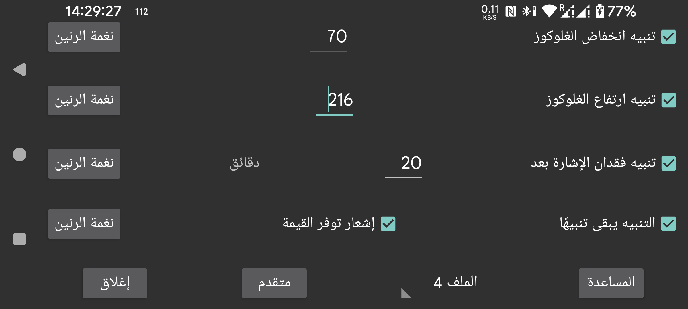

ar be de es fr it nl pl pt ru sv tr uk zh en
يمكن استخدام قيم البث المستلمة عبر البلوتوث لضبط تنبيهات انخفاض وارتفاع الغلوكوز.
القيمة التي عندها أو دونها يجب أن يعمل التنبيه.
القيمة التي عندها أو فوقها يجب أن يعمل التنبيه.
حدّد بعد كم دقيقة يجب أن يعمل التنبيه إذا لم تُستلم قيمة غلوكوز عبر البلوتوث.
ستتوقف التنبيهات عند تحقق أحد الشروط التالية:
- انقضاء المدة المحددة.
- لمس عرض المنحنى.
- لمس إشعار Juggluco في Android عندما يكون الجهاز غير مقفل.
- لمس زر «إلغاء» في إشعار التنبيه داخل Juggluco.
- لمس الغلوكوز العائم.
أحياناً لا يعمل المستشعر. عند تفعيل هذا الخيار سيتم إعلامك عندما يعمل المستشعر مجدداً، لكن فقط إذا كنت قد رأيت داخل تطبيق Juggluco نفسه أن القيمة كانت مفقودة. إذا كنت تعرف أن القيمة كانت مفقودة فقط من خلال إشعار Juggluco أو واجهة الساعة، فلن يتم تشغيل إشعار توفر القيمة.
يمكنك تحديد نغمة الرنين ومدة تشغيلها لكل تنبيه.
عند تحديد «التنبيه يبقى تنبيهًا»، تُعطى نغمة الرنين الخاصة بتنبيهات الانخفاض والارتفاع وفقدان الإشارة فئة صوت التنبيهات. وهذا يعني أن مستوى الصوت في إعدادات Android يُدار بواسطة منزلق صوت التنبيهات، ولا يتم كتمه عندما يُغلق صوت الهاتف أو يُضبط على الاهتزاز. إذا لم يكن «التنبيه يبقى تنبيهًا» محدداً، فسيُستخدم منزلق صوت الإشعارات في الهواتف، والمنزلق العام في Samsung Galaxy Watch 4-7. وهذا ينطبق دائماً على إشعار توفر القيمة.
حدّد الملف الذي تنتمي إليه هذه الإعدادات. بهذه الطريقة يمكنك التبديل بين إعدادات التنبيهات والنطق. ويمكنك تحديد ملف ليُفعّل تلقائياً في وقت معيّن ضمن متقدم → الجداول.
قائمة التنبيهات المتقدمة: انخفاض شديد، ارتفاع شديد، انخفاض قريب، ارتفاع قريب، كما يمكنك جدولة تفعيل الملفات في أوقات معينة.